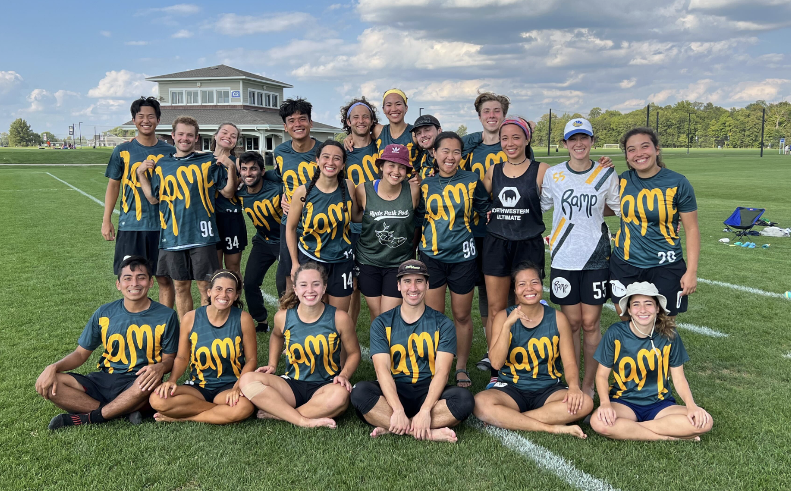

Allie Chu is currently a student living in Chicago attending college at the University of Chicago. Passionate about both design and computer science, she mixes these interests in pursuit of a double major in Computer Science and Media Arts and Design. Her previous experience includes interning at Clubhouse, a social audio based startup; interning at Clarity Partners designing flows and coding components for various public and private clients; and building a website to host an interactive map-based data visualization about gentrification in Chicago. You can check out her resume here!
Aside from coursework, Allie enjoys finding the best desserts in Chicago (BaoBing soft serve, Miko's Mango Italian Ice, and the Portuguese egg tarts at Noodlebird are the current top three), playing ultimate frisbee with her friends, and walking the dogs in her neighborhood.